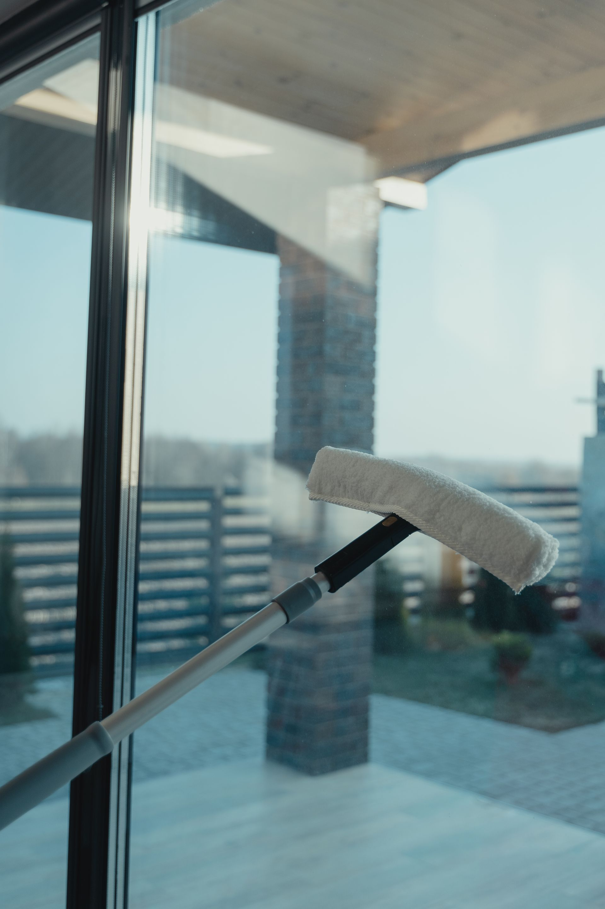
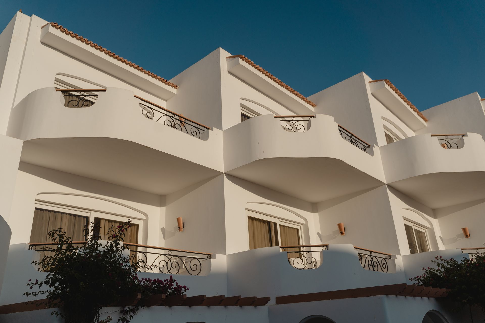

Advanced solutions for hard-to-reach glass
Every structure requires a different approach. We analyse your building's architecture to apply the safest and most efficient method:
Carbon-fibre water-fed poles: Pure-water cleaning from the ground up to 20 metres high. Ideal for mid-rise buildings, canopies and glass roofs.
Aerial work platforms & cradles: We operate our own or hired scissor lifts and cradle systems for large hotel complexes and apartment blocks.

Certified safety on every job
Our clients' peace of mind is our priority. Choosing us for your high-rise window cleaning means full legal compliance:
Trained technicians: Staff certified for working at height and using PPE.
Public liability insurance: High-value cover specifically for high-risk work.
Risk prevention (PRL): All documentation (TC2 forms, safety plans) kept up to date for property managers and hotel managers.

The strategic ally of Benidorm's hotels
We know a hotel never stops operating. We offer scheduled cleaning plans for façades and bedroom windows, ensuring excellent visual impact for your guests without disturbing their rest or your staff's workflow.
Pure osmosed water: lasting shine against salt spray
Benidorm's marine environment is harsh on glass. We use pure deionised water that acts like a magnet for dirt. Because no chemical detergents are used, no sticky residue is left behind, keeping the glass clean for much longer against sand and salt.
Questions about technical high-rise cleaning
Do you need special permits for public roads?
Yes — and we handle everything. We manage public-road occupation permits with Benidorm Town Hall when platforms need to be installed.
Do you work across the whole province?
We're based in Benidorm but provide high-rise coverage throughout the Marina Baixa (Altea, Villajoyosa, Finestrat).
Quotes that match your needs
Don't take unnecessary risks or trust your building's image to beginners. Choose Luz de Luna's experience.